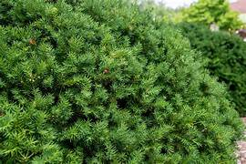
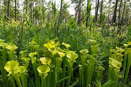

Endangered Flora

Himalayan Yew
The Himalayan yew, is a species of yew, native to the Himalaya and parts of south-east Asia.

Nilgiri Sandalwood
Nilgiris Biosphere Reserve is India's first and foremost biosphere reserves with a heritage, rich in flora and fauna.

Pitcher Plant
Pitcher plants are carnivorous plants with modified leaves that trap and digest insects.